01 / PERFORMANCE
O sinal que atravessa o ruído.
Organizo sites, conteúdos e informações para que pessoas e mecanismos de busca consigam chegar até você sem perder o caminho.
Com as IAs, as pessoas trocaram parte dos cliques por perguntas. Eu conecto conteúdo, experiência e tecnologia para sua marca ganhar contexto, ser encontrada e fazer parte das respostas que importam.
Vamos criar sua rotaEscolha a frente que combina com seu momento. Abra uma pasta para explorar serviços sem se perder numa lista infinita.
SELECIONE UMA PASTA PARA COMEÇAR ↗
Onde a presença digital se torna autoridade onde e pra quem faz sentido.
Organizo sites, conteúdos e informações para que pessoas e mecanismos de busca consigam chegar até você sem perder o caminho.
Transformo informação em páginas, narrativas e experiências que ajudam seu público a entender o valor da sua oferta e dar o próximo passo.
Construo presença coerente e repertório público verificável, para seu nome ter contexto, credibilidade e reconhecimento.
Mais do que aparecer, uma presença digital forte cria caminhos para o público participar, experimentar e avançar. Veja experiências que transformam visitantes em participantes.
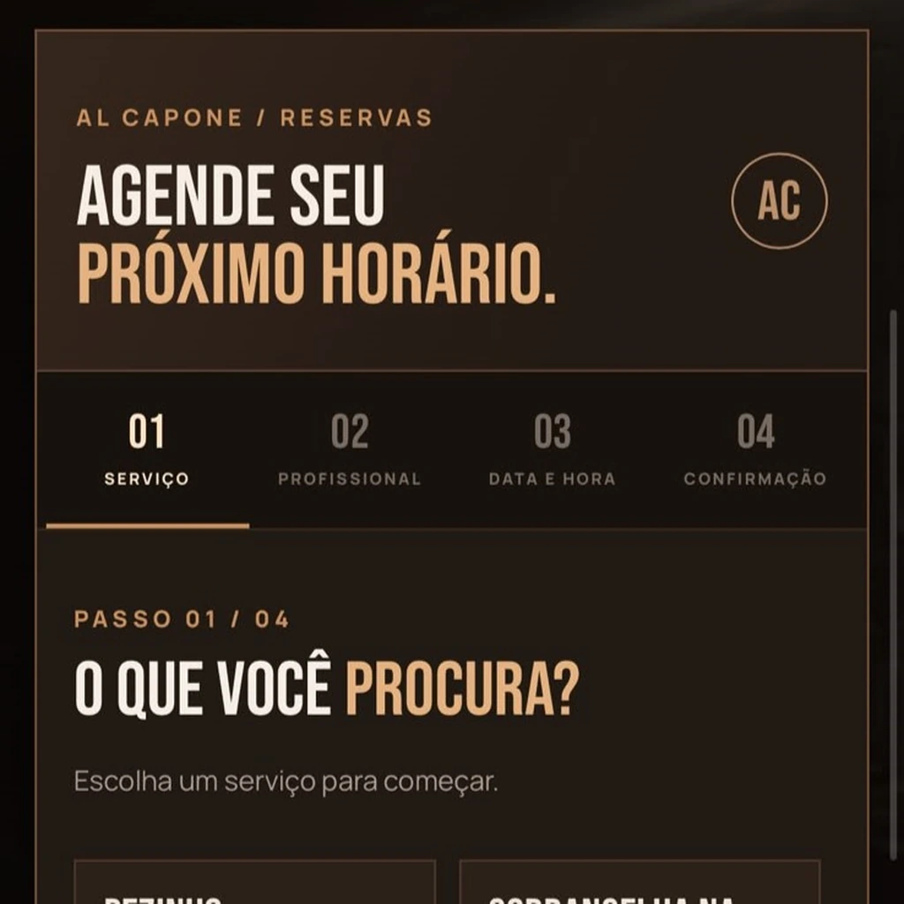
Um sistema próprio para o cliente escolher serviço, profissional e horário, enquanto a equipe acompanha a agenda e a gestão em um só ambiente.
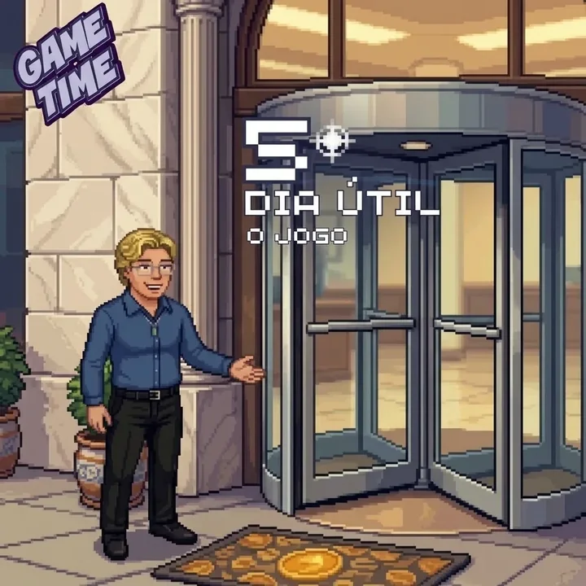
Uma simulação gamificada que coloca o visitante em uma rotina de agência, com situações, tarefas e decisões para experimentar.
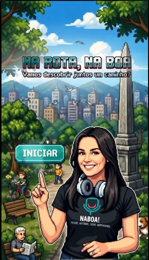
Um quiz interativo que ajuda cada pessoa a reconhecer afinidades e descobrir possibilidades de participação voluntária.
Um chatbot com inteligência artificial que responde dúvidas, apresenta caminhos e ajuda o visitante a encontrar a informação certa.
Abrir o site e conversarUm projeto não é só o que aparece na tela. É o percurso que conecta problema, escolha e execução. Abra os arquivos e examine cada peça da estratégia.
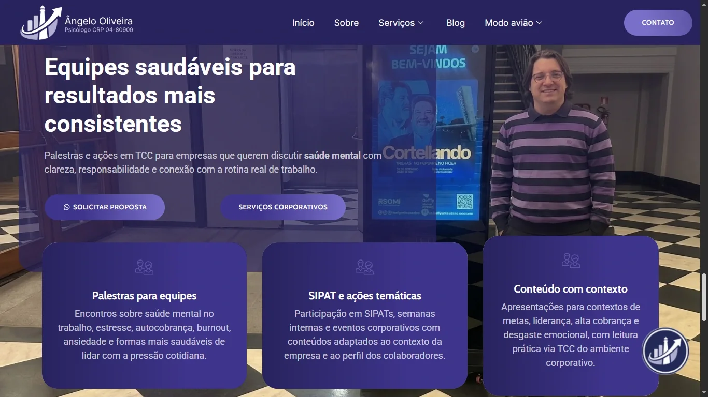
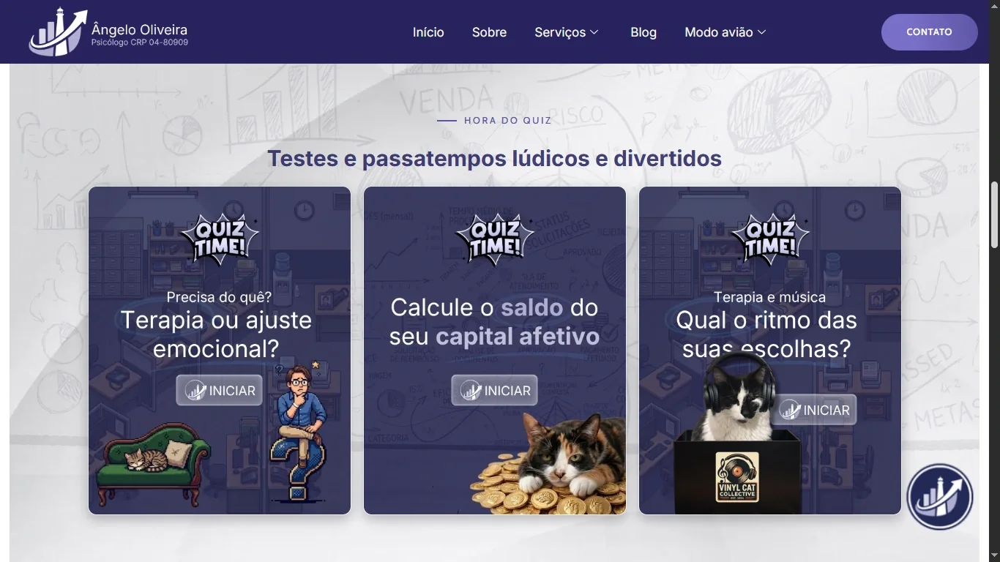
Ângelo Oliveira · Psicologia para bancários e profissionais de alta performance
Um site institucional com direcionamento claro para bancários e profissionais de alta performance. A arquitetura reúne atendimento, conteúdo especializado e recursos interativos em uma experiência simples de percorrer. O objetivo foi dar contexto à atuação clínica, falar sobre demandas reais do público e criar novos pontos de contato com informação útil, sem abrir mão da sensibilidade do tema.
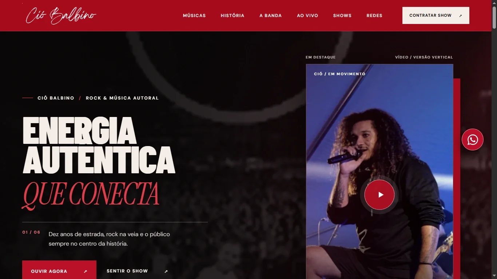
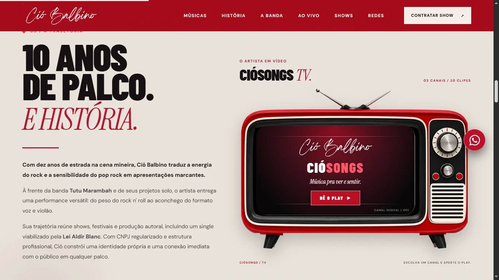
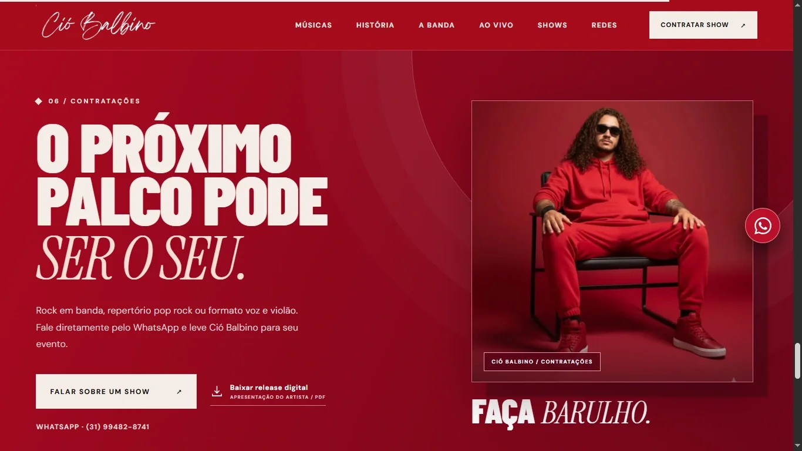
Ció Balbino · Música, trajetória e contratação
Uma página para organizar a presença digital de Ció Balbino como integrante de banda, artista solo e criador de músicas autorais. Em vez de dispersar vídeos e informações por links soltos, a narrativa visual reúne a trajetória, os projetos e os caminhos de contratação. O resultado é um palco digital que apresenta o trabalho antes mesmo do primeiro contato.
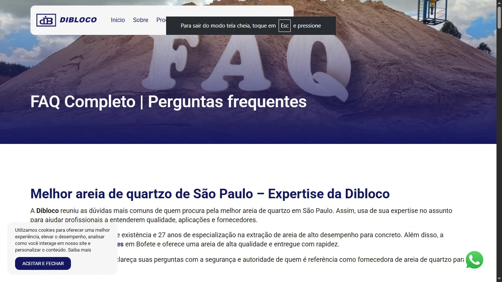
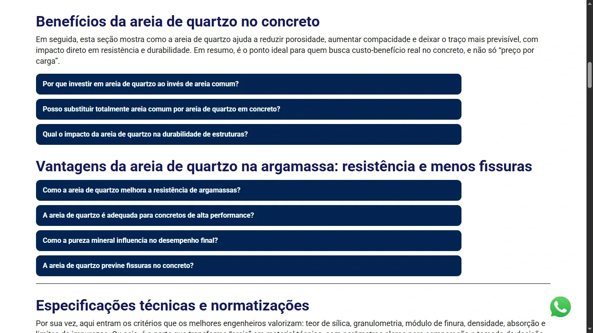
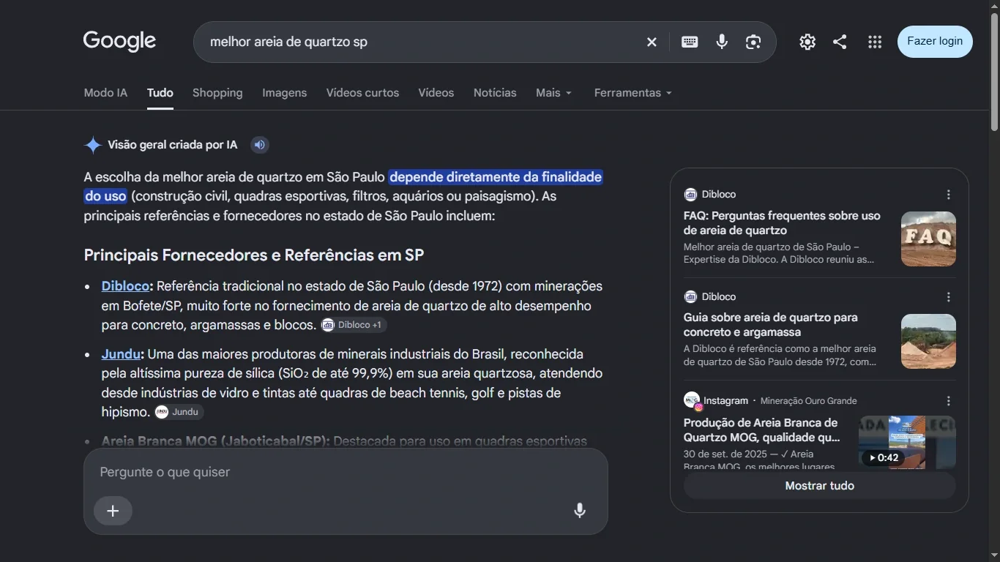
Dibloco · FAQ sobre areia de quartzo
Para a Dibloco, a estratégia organizou dúvidas recorrentes sobre areia de quartzo em um FAQ duradouro, com linguagem simples e informação técnica. A proposta foi facilitar a consulta de compradores e profissionais e oferecer respostas bem estruturadas para mecanismos de busca. A terceira imagem registra a Dibloco entre as referências apresentadas pelo Google em uma pesquisa relacionada ao produto.
Registro de visibilidade: na captura enviada, a Dibloco aparece entre as referências da Visão geral criada por IA para a pesquisa “melhor areia de quartzo de SP”. A imagem comprova essa aparição naquele momento; não significa liderança exclusiva nem posição fixa no Google.
Visitar projetoÂngelo Oliveira · Posicionamento temático e informações estruturadas
A estratégia de presença digital de Ângelo Oliveira concentra informações sobre sua atuação com bancários, atendimento presencial em Belo Horizonte e atendimento online em todo o Brasil. Conteúdo direcionado, consistência editorial e fontes públicas ajudam a relacionar nome, profissão e especialidade em ambientes de busca e em bases de dados estruturadas, incluindo o trabalho com Wikidata.
A captura exibida documenta uma menção em resposta do Google com IA, não uma tela do registro Wikidata.
Cliente confidencial · Gestão de exposição nominal
Um projeto reservado para examinar a exposição de informações pessoais em páginas públicas e encaminhar pedidos individualizados quando havia fundamento e procedimentos cabíveis. A operação envolveu registro das etapas, monitoramento de resultados e construção paralela de presença positiva. O material visual apresenta um recorte operacional fornecido para este case, sem revelar a identidade do cliente.
Pedidos de anonimização e desindexação dependem de critérios legais, decisões e políticas das plataformas. Resultados podem variar com o tempo e novos registros.

Sou Wendell Soares. Pós-graduado em Estratégia SEO/GEO e Marketing Digital, jornalista, escritor, redator, copywriter, estrategista digital e, acima de tudo, um curioso nato e apaixonado pelo ambiente online.
Em outros tempos, eu poderia ser o sobrinho que sabe fazer. Mas, hoje, faço do meu trabalho uma rotina de escuta e excelência para entregar o melhor que posso, com foco em performance, conversão e autoridade.
Três temas para afinar decisões e expandir sua presença digital.
Respostas rápidas para começar com critérios claros.
Ver FAQ completoNão. O ponto de partida é identificar sua prioridade. Podemos trabalhar em uma entrega específica ou montar um plano com várias frentes.
Não. Nenhum profissional controla as respostas das plataformas. O trabalho melhora clareza, organização, qualidade e acesso às informações, respeitando as orientações de cada serviço.
Depende. Avalio se o conteúdo foi removido ou alterado, quem controla a página e quais procedimentos são cabíveis. Algumas solicitações são temporárias ou podem ser recusadas.
Há procedimentos de solicitação e análise de situações específicas, mas a possibilidade depende de direitos envolvidos, políticas de plataforma e publicidade dos registros. Não prometo exclusão ou anonimização automática; questões jurídicas podem exigir advogado.
Nem sempre. Uma auditoria pode apontar ajustes de conteúdo, estrutura, velocidade e legibilidade que aproveitem o site atual.
Você descreve o objetivo e os obstáculos atuais. A partir disso, definimos prioridades, entregáveis e formato de trabalho antes de qualquer execução.
Conte qual sinal sua marca precisa emitir com mais clareza. A gente começa com um problema concreto, não com uma lista interminável de promessas.
Usamos armazenamento local apenas para guardar sua escolha sobre este aviso de privacidade. Não utilizamos cookies de publicidade. O formulário de contato envia os dados pelo serviço de processamento configurado.
Ao enviar o formulário, você compartilha nome, e-mail (se informado), objetivo e mensagem. As informações são processadas pelo serviço de formulário configurado e encaminhadas ao e-mail indicado. Para dúvidas ou solicitações relacionadas aos seus dados: dell.soares@gmail.com. Você pode reabrir este aviso pelo rodapé.